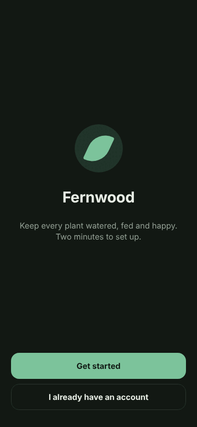
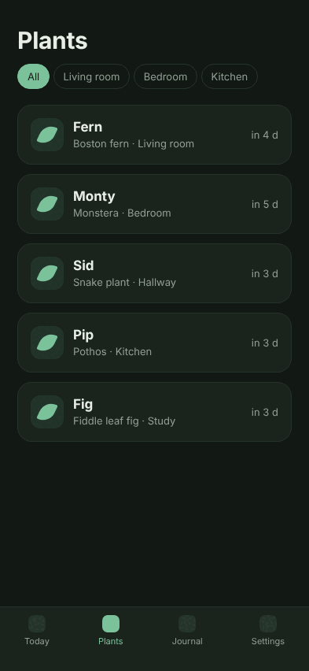
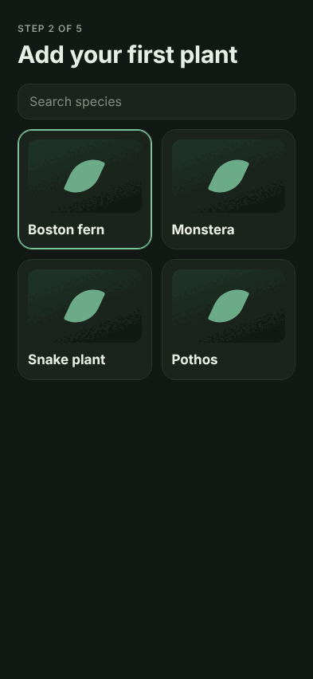
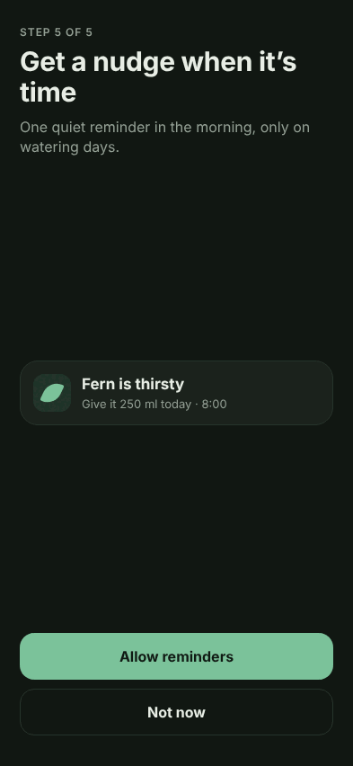
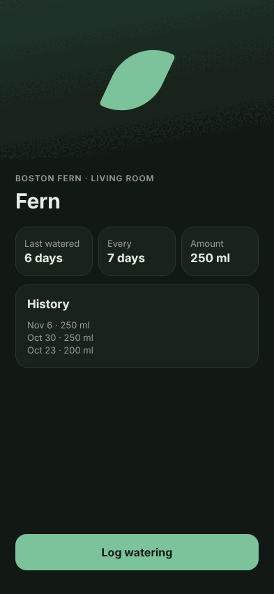

Your app, imitated. Honestly.
Imitor shows a React Native / Expo app’s UI without a simulator. It builds the app for the web, swaps native-only modules for stand-ins, and runs your flows in headless Chromium. Every shot names what is a stand-in.
Open the live demo
$
Free and open source, MIT. Early: v0, not on npm yet.
npm i -D github:joseamijares/imitor playwrightFrom your code to a shot you can trust, in four moves.
Stand-ins only apply to the web build Imitor makes. Your iOS and Android builds are never touched.
One flow, every shot, the stand-in marked.
The first-run flow of the demo app on an iPhone 16. The dashed tile is where a Skia drawing was stood in.







Your agent drives it. You review it.
Seven MCP tools let a coding agent build the preview, run flows, take screenshots and record videos, then read which parts were stood in.
 Claude Code
Claude Code
claude mcp add imitor -- npx imitor mcp Cursor, or any MCP client
Cursor, or any MCP client
npx imitor mcpcodex mcp add imitor -- npx imitor mcpAgent activitydemo data
imitor_describe2 flows, builtimitor_buildweb build readyimitor_run_flowlog-a-watering, 4 shots, skia stand-inimitor_screenshottoday, iphone-16, darkimitor_read_problemsno failed stepsimitor_record_videofirst-run.webmimitor_open_previewpreview URL for a person
What it does not show.
It shrinks what the final check on a real phone has to find. It does not replace it.
- Native navigation chrome, transitions and gestures
- Keyboard behaviour
- The phone’s exact font rendering
- Entering and layout animations
- Anything behind a stand-in
- Platform-specific code paths
- Widgets, notifications, Live Activities, watch apps